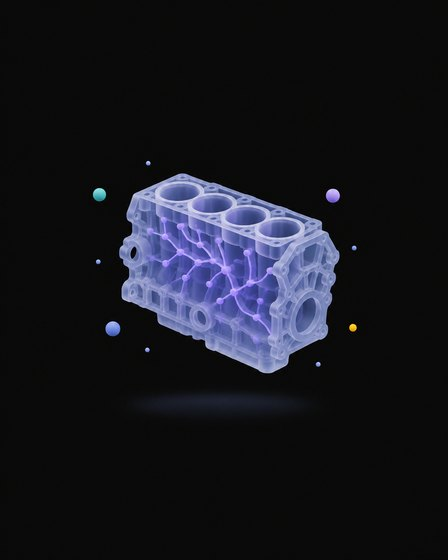
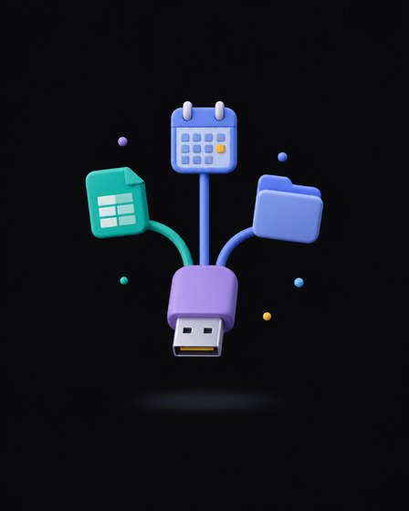

Receita por funcionário virou a métrica que mostra a ruptura.
Diante de qualquer problema, a primeira pergunta é: como a IA resolve isso para ele não voltar?
Resposta ruim quase sempre é falta de contexto.
Se não move nenhum dos três, é brinquedo.
Empresas com agentes de IA em escala, por porte.
Crescimento de usuários semanais de Codex nas empresas, desde fevereiro de 2026.
Ganho de produtividade com IA, por tipo de trabalho.
Para orquestrar, primeiro é preciso entender o motor.


Quatro partes. A que faltar, a IA chuta.
Escreve um e-mail avisando que o preço vai subir.
Sem papel, sem contexto, sem formato: a IA chuta o cliente, o motivo, o prazo e o tom. O texto sai genérico e você reescreve.
Papel: você é a Marina, gerente comercial da Torra Viva Cafés Especiais, e fala com os clientes de um jeito próximo e direto.
Contexto: a Clínica Bem Viver é cliente desde novembro de 2025, tem 32 funcionários, plano Mantiqueira Clássico com contrato anual e deu nota 10 na última pesquisa. O preço do kg vai subir 6% a partir de 01/12/2026, porque o café verde (o grão cru, antes da torra) ficou mais caro. Quem renovar o contrato anual até 30/11 mantém o preço atual por mais 12 meses.
Tarefa: escreva o e-mail avisando o reajuste e oferecendo a renovação.
Formato: assunto + corpo de até 150 palavras, sem jargão, com uma chamada clara no fim. Assine "Marina, Torra Viva".
sheets.new → Arquivo → Importar → dados/torra-viva.xlsx da pasta da manhã./mcp//eli5 o que é margem de contribuição.claude/skills/eli5/SKILL.mdO que você sabe sobre esta empresa?
Ele não conhece a empresa: avisa que não sabe ou chuta.
Ele lê o CLAUDE.md e dados/vendas-mensais.csv: Mantiqueira Clássico 250 g, 2.910 unidades de janeiro a setembro.
A resposta deixa de ser chute e passa a usar o dado. (Dados fictícios de exemplo.)
meu-trabalho/resumo-vendas.md.claude/skills/resposta-cliente/meu-trabalho/prompts.mdimersao-manha.powershell → Enter. Mac: cd e arraste a pasta para o Terminal.claudeNa sua pasta da manhã:
dados/ → torra-viva.xlsx
sheets.new → Arquivo → Importar → Fazer upload → Substituir planilha
"Torra Viva (dados fictícios)"
Abas: Sobre, Vendas, Produtos, Clientes B2B, Orçamento.
/clear antes de cada um. O assunto muda; o formato fica: 5 partes, sempre na mesma ordem. Você não explicou nada ao Claude: a skill explicou.
meu-trabalho/calculadora-orcamento.html
Confira: 25 pessoas, 2 xícaras, 21 dias, Blend Escritório, anual, com máquina → R$ 970,20/mês.
tipo Dashboard dos Artifacts
Confira: R$ 765.578,40 de janeiro a setembro, melhor mês agosto, 12 clientes B2B ativos.
tipo Slides dos Artifacts
6 slides com os dados da pasta. Exporta em PDF ou PowerPoint.
/criar-pagina e revisada com o /impeccable./mapear-empresa e do /mapear-concorrentes./criar-conteudo.memoria/, pesquisa/ (empresa, mercado, cliente, diagnóstico e concorrentes) e o RESULTADO.html na fase 3 de 6entregas/pagina-de-vendas.html e formulario.html: pedido pelo WhatsApp e mapa, com a sua marcaentregas/conteudo.md (pilares, 12 pautas, calendário) e entregas/posts/: carrossel e 2 posts em HTML, sem PNGmemoria/sobre-mim.md: papel, semana e processos (gatilho, passos, ferramentas, tempo e dor), mais memoria/falta-trazer.mdentregas/sugestoes.md: até 10 sugestões com impacto, esforço e próximo passo, e 1 skill nova sua